1 Equal contribution. * Corresponding author.
International Journal of Geographical Information Science · 2026
The United Nations' Sustainable Development Goals (SDGs) provide a universal framework for addressing global resource and environmental challenges. However, most existing assessments rely on historical statistical data at coarse scales, often overlooking the explicit spatial dimension and the dynamic interactions between land-use change and infrastructure expansion. To address this, we developed GeoSDG, an integrated modeling toolkit that couples cellular automata (CA) models of land-use and infrastructure change with a spatial SDG assessment framework. Unlike traditional static approaches, GeoSDG captures the co-evolution of land use and urban infrastructure, achieving satisfactory simulation performance (Figure of Merit: 0.128 for land use, 0.263 for infrastructure). By evaluating 27 indicators across ten land-related SDGs, the framework is broadly consistent with established UN SDG assessment principles. Applying GeoSDG to the Yangtze River Delta from 2020 to 2050 under multiple Shared Socioeconomic Pathways (SSPs), our results reveal substantial spatial heterogeneity and identify approximately 10% of the land area as high-priority zones for targeted intervention. These findings highlight rapidly growing urban areas and provide pathway-specific policy recommendations to support progress towards the 2030 and 2050 sustainability targets.
The United Nations established the Sustainable Development Goals (SDGs) to address urgent global resource and environmental challenges. Comprising 17 goals, 169 targets, and more than 230 indicators, many of these goals are inherently spatial and depend on land-use and infrastructure conditions. As the 2030 deadline approaches, most countries are falling short, and some scholars have proposed extending the SDG framework to 2050 through a two-stage process — a scenario-based projection rather than retrospective assessment alone.
Existing studies calculate SDG scores at global, national, and regional scales, but they primarily analyze historical data and lack dynamic simulations of future trends connected to policy interventions. Various modelling frameworks — including the iSDG, International Futures (IFs), SDG-IO, and Threshold 21 (T21) models — emphasize statistical and data-driven approaches and often overlook spatial variability and process-based spatial dynamics, limiting their ability to identify where SDG synergies and conflicts emerge under alternative pathways.
Land is a spatially defining variable, and cellular automata (CA) models are widely used to simulate urban land-use change. However, existing CA-based models focus on land-use patterns alone and do not incorporate infrastructure dynamics, which are equally crucial for SDG indicators related to accessibility and service coverage. No existing framework simultaneously simulates both land use and infrastructure changes and couples them with spatial SDG evaluation under future scenarios.
To address these limitations, this study introduces GeoSDG, a geo-simulation toolkit that integrates CA-based simulations of land-use and infrastructure change with a spatially explicit SDG indicator system. GeoSDG highlights three contributions: (1) incorporating CA techniques to address 10 SDGs pertaining to land use (SDG 2, 3, 4, 6, 7, 9, 11, 13, 14, and 15) with 27 indicators; (2) introducing a CA-based approach for simulating changes in infrastructure coverage alongside land-use change; and (3) supporting the identification of critical timeframes, regional disparities, and priority areas for sustainable development.
The GeoSDG toolkit is an integrated and reusable framework designed to simulate how changes in land use and infrastructure coverage affect the spatial dynamics of SDG performance. It consists of three modules: (1) a spatial assessment framework for land-related SDGs; (2) CA-based simulation of land-use and infrastructure coverage dynamics using raster data; and (3) iterative assessment of future SDG trajectories.
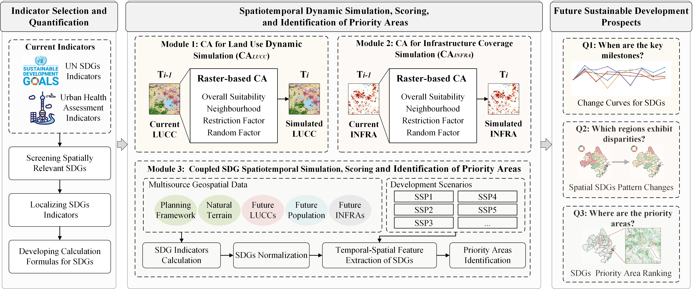
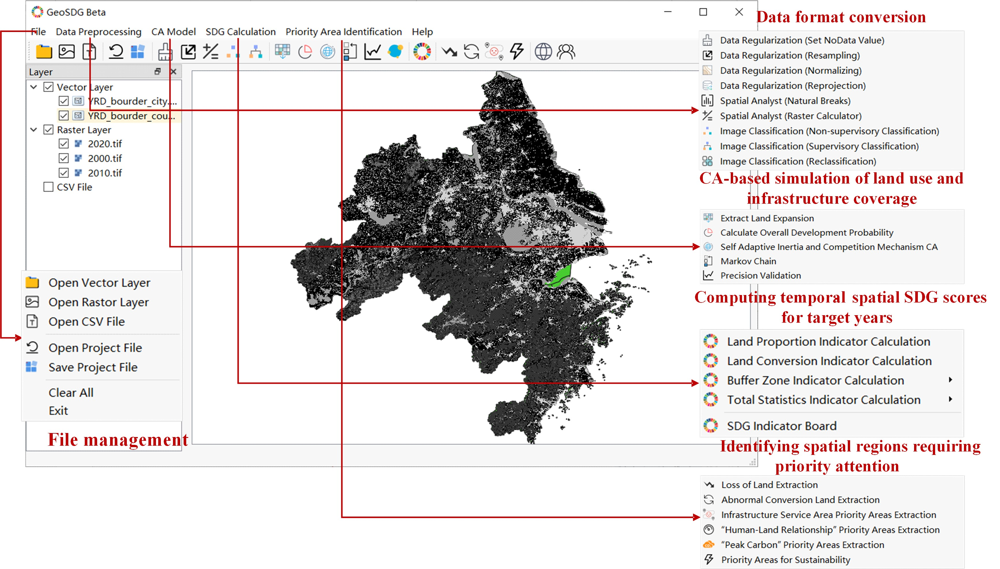
Based on the UN global SDGs framework, a subset of 10 SDGs and 17 targets most directly related to land dynamics and spatial sustainability was selected, comprising a total of 27 indicators. The indicators are categorized into four types based on measurement method: Land Proportion Indicators, Land Conversion Indicators, Buffer Zone Indicators, and Total Statistics Indicators. Indicators are normalized to a range of 0–100, with positive, negative, and neutral indicators reflecting better sustainability at higher, lower, and closer-to-optimal values, respectively.
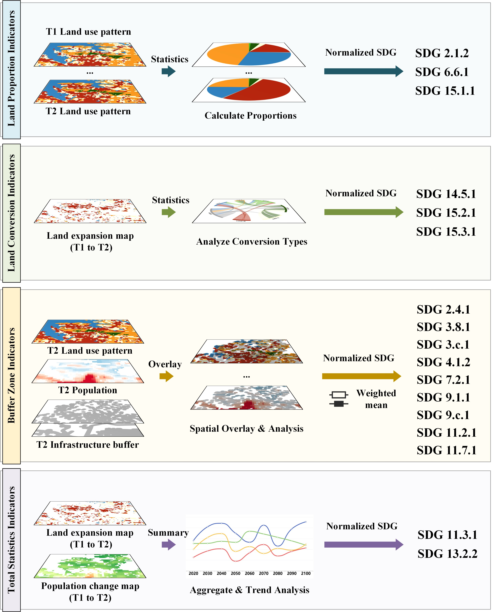
GeoSDG uses two separate CA models to simulate future land use and infrastructure coverage. The CALUCC model simulates land-use dynamics by integrating the overall transition probability (derived from a random forest model), the neighbourhood effect, a self-adaptive inertia coefficient, a constraint factor, and a random factor. The CAINFRA model is a simplified CA distinguishing two states (covered / not covered by infrastructure), using a random forest to estimate infrastructure coverage probability and a competitive patch-seeding mechanism to simulate cell-level evolution.
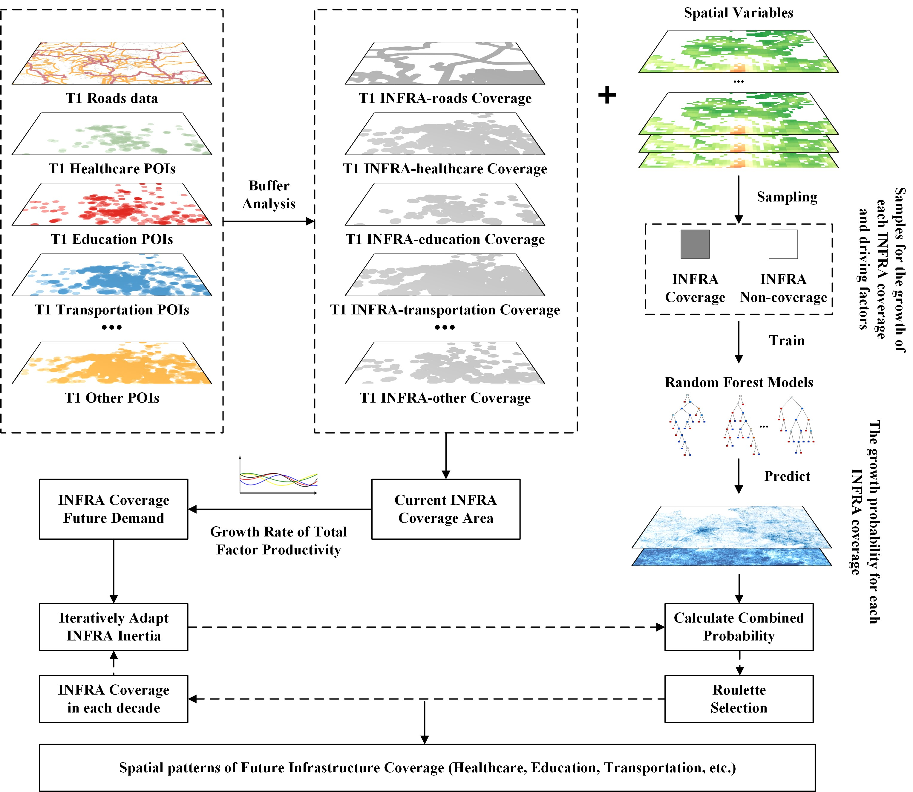
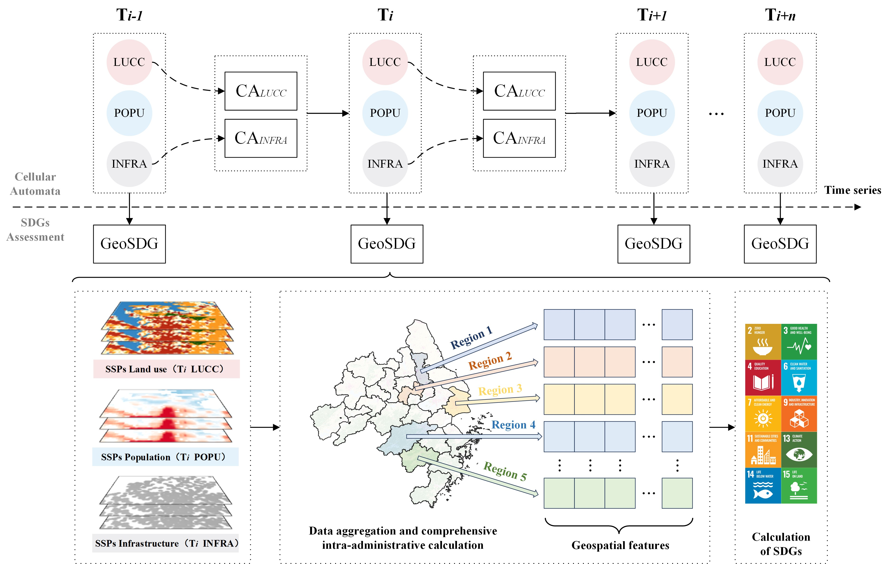
The validation comprises three components: the Figure of Merit (FoM) and Overall Accuracy (OA) evaluate the performance of the two CA models, and a correlation analysis assesses the reliability of GeoSDG-derived SDG scores against reference assessments. FoM values between 0.1 and 0.3 and OA values above 0.8 indicate satisfactory performance in land-use simulations.
Priority areas are identified in four categories: (1) Land Use Proportion and Transition Priority Areas; (2) Infrastructure Service Area Priority Areas; (3) "Human-Land Relationship" Priority Areas (SDG 11.3.1); and (4) "Peak Carbon" Priority Areas (SDG 13.2.2). Priority layers are overlaid to produce an integrated ranking, categorizing regions into four priority levels: Low, Moderate, High, and Critical.
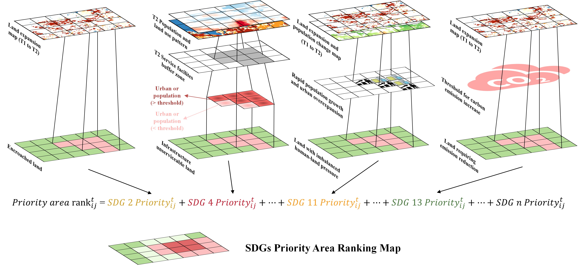
This study focuses on the Yangtze River Delta Urban Agglomeration (YRDUA), a key urban agglomeration in eastern China covering 211,700 km² and comprising 27 cities across Shanghai, Jiangsu, Zhejiang, and Anhui. With its diverse city composition and development stages, significant economic output (approximately one-fifth of China's GDP), and pressing sustainability challenges, the YRDUA is an ideal case study for exploring spatially differentiated sustainable development strategies.
Land-use data (2010–2020) were sourced from China's CNLUCC dataset and reclassified into six types (arable land, forest, grassland, water, urban land, and unused land). Multi-source geographic data — including topography, transportation, location, and various POIs — were used as driving factors, resampled to 30 m and normalized between 0 and 1. Infrastructure coverage was derived from GaoDe POI data using kernel density estimation (KDE) with a 200 m bandwidth.
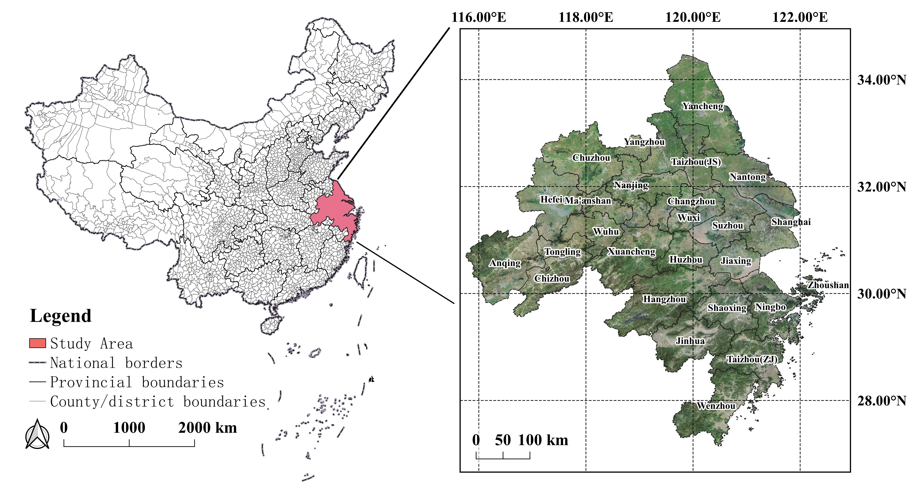
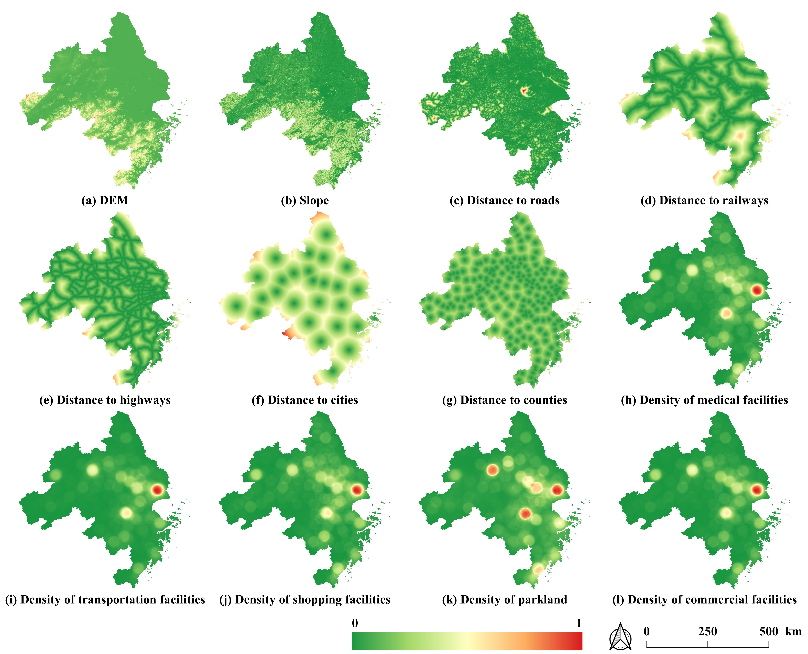
Simulations of land-use and infrastructure coverage dynamics were conducted within the YRDUA at a 30 m resolution. The model performs satisfactorily, with a FoM of 0.128 and OA of 0.815 for CALUCC, and a FoM of 0.263 and OA of 0.923 for CAINFRA. More than 70% of administrative units achieved FoM accuracy greater than 0.1, and more than 90% achieved OA accuracy greater than 0.8. Correlation analysis between GeoSDG scores and reference assessments showed strong correlation for SDG 11 (0.898) and SDG 15 (0.831), and moderate correlation for SDG 3, 4, and 6.
Five development scenarios based on integrated SSPs (SSP1–5), ranging from optimistic to pessimistic, were investigated. The results indicate an upward trend in SDG scores across all scenarios from 2020 to 2050. SSP1, SSP2, and SSP5 reach the highest sustainability scores by 2050, with SSP1 and SSP2 strongest in environmental and social dimensions and SSP5 strongest economically. At the indicator level, SDG 6, 7, 13, and 14 show strong gains, while SDG 2 and 15 decline consistently, and SDG 11 exhibits marked volatility.
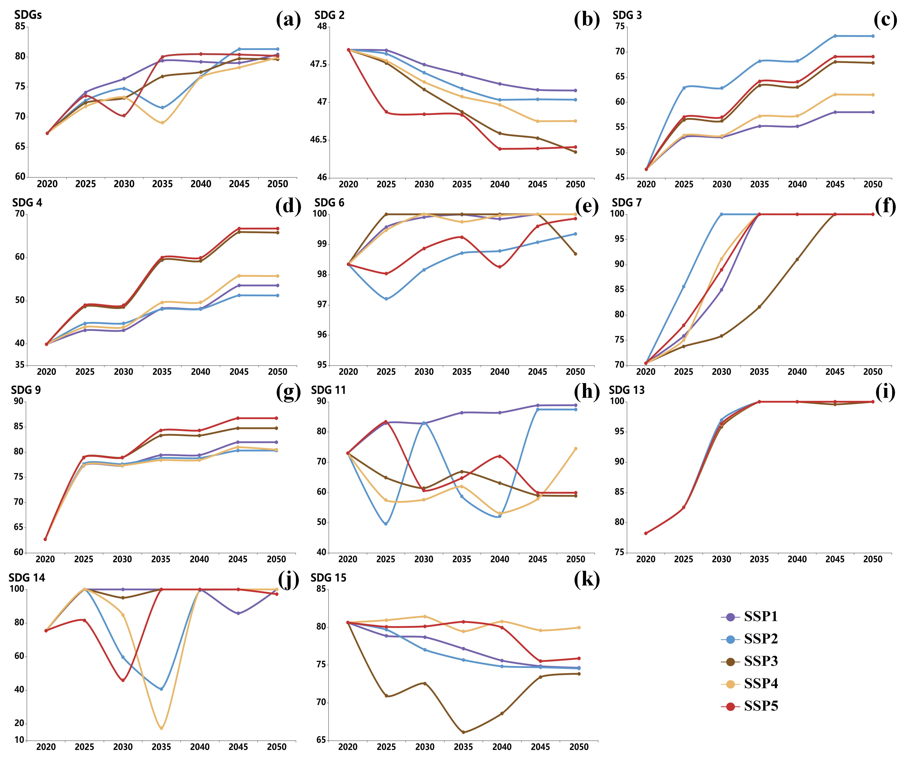
The YRDUA's 2020 spatial pattern is characterized by "central high, north and south low". By 2030, SSP2 and SSP4 show the smallest improvements, while SSP3 exhibits the greatest inter-city imbalance. By 2050, initially underdeveloped areas improve most notably, with SSP3 showing the largest uplift and SSP4 displaying the greatest regional disparity.
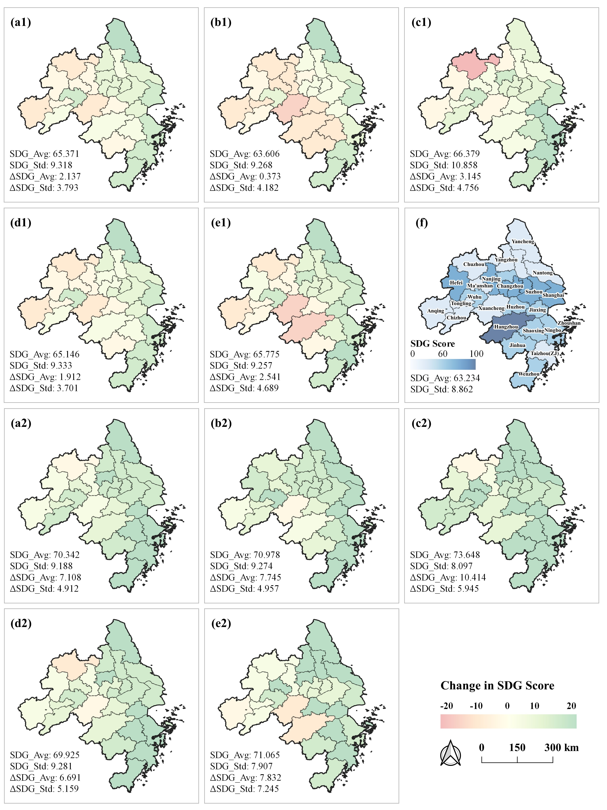
By 2030, SSP3 demands the largest priority area (>15,000 km²) and SSP2 the least (8,667 km²). By 2050, SSP3 remains largest (22,853 km²) while SSP2 expands most rapidly. Priority areas were concentrated in rapidly developing cities in southern Jiangsu, northern Zhejiang, and eastern Anhui, where urban development pressure coincided with existing sustainability deficits.
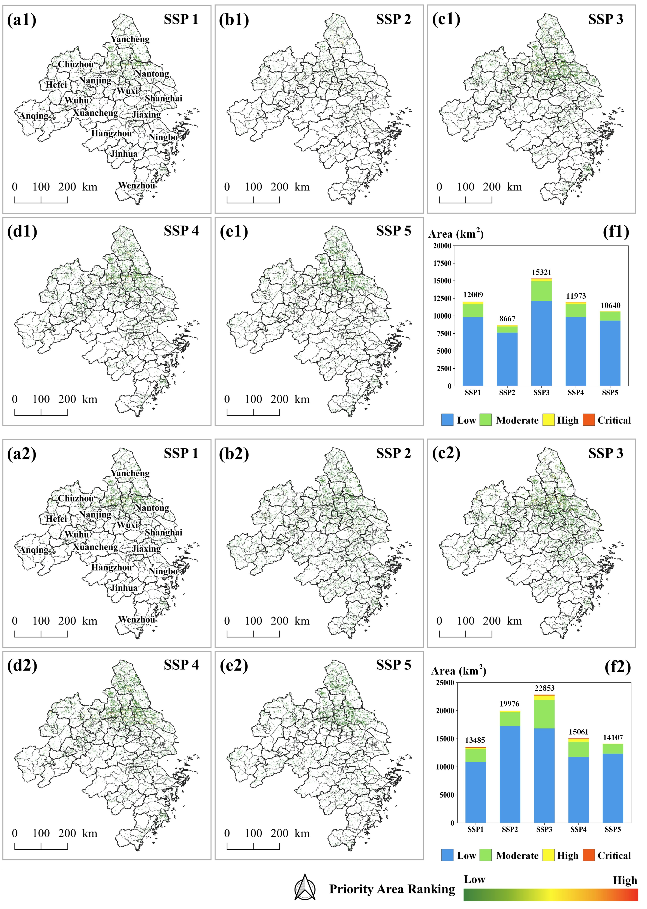
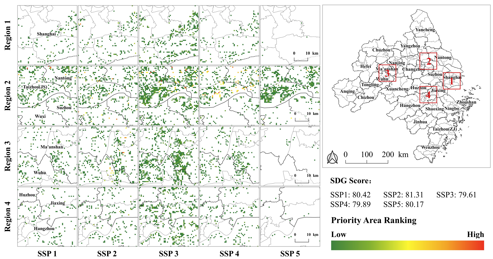
GeoSDG extends conventional retrospective SDG assessments into a forward-looking and spatially dynamic modelling framework. The inclusion of the CAINFRA module further expands conventional land-use CA modelling by representing changes in infrastructure coverage, which are essential for accessibility- and service-related SDG indicators.
The validation results indicate that GeoSDG performs especially well for spatially explicit indicators directly linked to land-cover and ecological attributes (SDGs 11 and 15, r > 0.8), whereas its weaker performance for SDGs 2, 7, 9, and 13 reflects the limitations of spatial proxies for indicators shaped by complex socioeconomic processes. For these indicators, GeoSDG should complement rather than replace conventional statistical monitoring.
GeoSDG's modular structure gives the framework the potential to be adapted to regions where fine-scale statistical data are limited but suitable geospatial data are available. However, its transferability remains conceptual because it has so far been demonstrated only in the YRDUA, a highly urbanized region with dense infrastructure data. Applying GeoSDG elsewhere would require locally appropriate data, recalibration of the CA models, and adaptation of the indicator system, thresholds, and weights.
By linking SDG trajectories, spatial heterogeneity, and scenario-dependent trade-offs, GeoSDG provides a structured basis for adaptive and spatially targeted policy analysis. The location, extent, and composition of priority areas varied across scenarios — some remained stable, indicating persistent constraints, whereas others shifted substantially, reflecting scenario-dependent risks.
This study introduces GeoSDG, a geo-simulation toolkit that integrates cellular automata with SSPs to simulate future land-use and infrastructure change and assess their implications for SDG performance. The main contributions are:
The GeoSDG toolkit is available as an open-source C++ program under the GPL-3.0 license, with comprehensive documentation and source code for complete analysis workflows and customization.
@article{Sun20082026,
author = {Zhenhui Sun and Minyi Gao and Mengya Li and Ziheng Xu and Xia Li},
title = {New pathways for UN SDGs spatialization: GeoSDG toolkit empowering the sustainable future under a spatial context},
journal = {International Journal of Geographical Information Science},
volume = {0},
number = {0},
pages = {1--24},
year = {2026},
publisher = {Taylor \& Francis},
doi = {10.1080/13658816.2026.2717629},
URL = {https://doi.org/10.1080/13658816.2026.2717629},
eprint = {https://doi.org/10.1080/13658816.2026.2717629}
}
本文内容由 DeepSeek-V4 Pro AI 自动总结生成，仅供参考。详细信息请以原文为准。
Content on this page is AI-summarized by DeepSeek-V4 Pro. Please refer to the original publication for authoritative information.